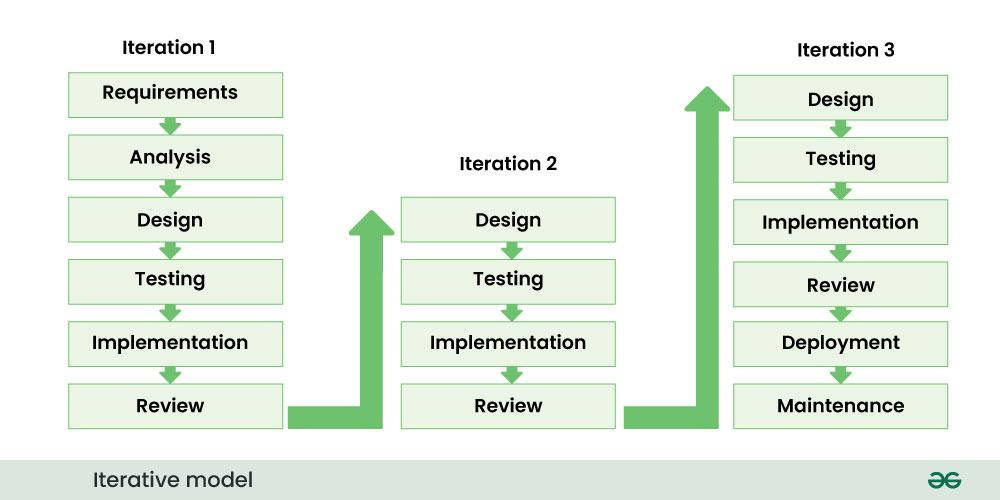
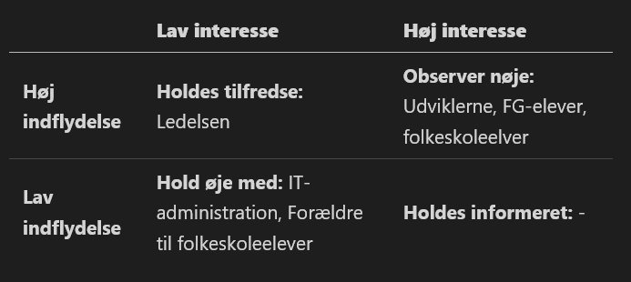
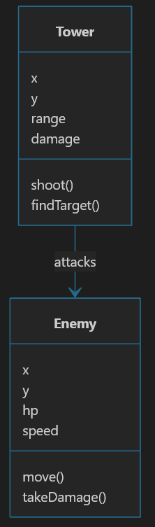

Andreas Hussain Sarantaris · 01-09-2026
Frederikssund Gymnasium · Programmering B

Figur 2: Iterativ model. Kilde: GeeksforGeeks.
stakeholder_analysis.mdfeatures.md
Figur: Vores interessentmatrix.
features.md.
class_diagram.md, kopiér denne kode og udbyg klassediagrammet.```mermaid
classDiagram
class Tower {
x
y
range
damage
shoot()
findTarget()
draw()
}
class Enemy {
x
y
hp
speed
move()
draw()
}
Tower --> Enemy : attacks
```| Punkt * | Start + varighed | Aktivitet | Indhold |
|---|---|---|---|
| 1U | 08:10 + 10 | Opsamling fra sidst | Kort opsummering og hovedbudskaberne af sidste lektion. |
| 1Ø | 08:20 + 20 | Gennemgang af lektier til i dag | Eventuelle spørgsmål om indholdet i sidste lektion, samt gennemgang af de projekter som I har fundet. |
| 2U | 08:40 + 10 | Introduktion til klassediagrammer | Kort om hvad et klassediagram er. |
| 2Ø | 08:50 + 45 | Lav et klassediagram | I skal lave et klassediagram for jeres spil. |
| 3U | 09:35 + 5 | Opsamling, lektier og næste lektion | Hjemmearbejde til næste gang og emnerne for næste lektion. |
| 3Ø | 09:40 + 5 | Afrunding | Færdiggør jeres arbejde og reflektér over jeres læring. |